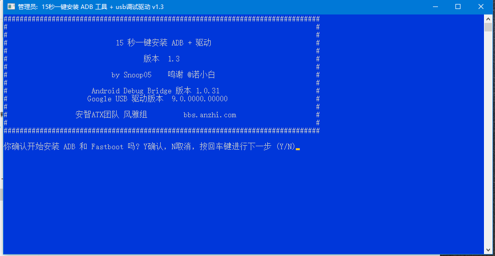

adb 操作介绍
什么是 adb？
adb的全称为Android Debug Bridge，就是起到调试桥的作用。通过adb我们可以在Eclipse中方面通过DDMS来调试Android程序，说白了就是debug工具。adb的工作方式比较特殊，采用监听Socket TCP 5554等端口的方式让IDE和Qemu通讯，默认情况下adb会daemon相关的网络端口，所以当我们运行Eclipse时adb进程就会自动运行。
原文链接：https://blog.csdn.net/janronehoo/article/details/6863772
安装 adb
adb 安装已经上传到了下载站中，下载文件解压并运行里面的 .exe 文件。

一路输入 y ，回车，就回自动安装 adb 软件的环境了，中间会出现安装驱动的一个过程，也是一样的安装驱动，直到窗口自动关闭。 win + R 输入 cmd 打开命令行，在命令行中输入 adb 即可得到具体的使用菜单介绍。
Android Debug Bridge version 1.0.31
-a - directs adb to listen on all interfaces for a connection
-d - directs command to the only connected USB device
returns an error if more than one USB device is present.
-e - directs command to the only running emulator.
returns an error if more than one emulator is running.
-s <specific device> - directs command to the device or emulator with the given
serial number or qualifier. Overrides ANDROID_SERIAL
environment variable.
-p <product name or path> - simple product name like 'sooner', or
a relative/absolute path to a product
out directory like 'out/target/product/sooner'.
If -p is not specified, the ANDROID_PRODUCT_OUT
environment variable is used, which must
be an absolute path.
-H - Name of adb server host (default: localhost)
-P - Port of adb server (default: 5037)
devices [-l] - list all connected devices
('-l' will also list device qualifiers)
connect <host>[:<port>] - connect to a device via TCP/IP
Port 5555 is used by default if no port number is specified.
disconnect [<host>[:<port>]] - disconnect from a TCP/IP device.
Port 5555 is used by default if no port number is specified.
Using this command with no additional arguments
will disconnect from all connected TCP/IP devices.
device commands:
adb push <local> <remote> - copy file/dir to device
adb pull <remote> [<local>] - copy file/dir from device
adb sync [ <directory> ] - copy host->device only if changed
(-l means list but don't copy)
(see 'adb help all')
adb shell - run remote shell interactively
adb shell <command> - run remote shell command
adb emu <command> - run emulator console command
adb logcat [ <filter-spec> ] - View device log
adb forward --list - list all forward socket connections.
the format is a list of lines with the following format:
<serial> " " <local> " " <remote> "\n"
adb forward <local> <remote> - forward socket connections
forward specs are one of:
tcp:<port>
localabstract:<unix domain socket name>
localreserved:<unix domain socket name>
localfilesystem:<unix domain socket name>
dev:<character device name>
jdwp:<process pid> (remote only)
adb forward --no-rebind <local> <remote>
- same as 'adb forward <local> <remote>' but fails
if <local> is already forwarded
adb forward --remove <local> - remove a specific forward socket connection
adb forward --remove-all - remove all forward socket connections
adb jdwp - list PIDs of processes hosting a JDWP transport
adb install [-l] [-r] [-s] [--algo <algorithm name> --key <hex-encoded key> --iv <hex-encoded iv>] <file>
- push this package file to the device and install it
('-l' means forward-lock the app)
('-r' means reinstall the app, keeping its data)
('-s' means install on SD card instead of internal storage)
('--algo', '--key', and '--iv' mean the file is encrypted already)
adb uninstall [-k] <package> - remove this app package from the device
('-k' means keep the data and cache directories)
adb bugreport - return all information from the device
that should be included in a bug report.
adb backup [-f <file>] [-apk|-noapk] [-obb|-noobb] [-shared|-noshared] [-all] [-system|-nosystem] [<packages...>]
- write an archive of the device's data to <file>.
If no -f option is supplied then the data is written
to "backup.ab" in the current directory.
(-apk|-noapk enable/disable backup of the .apks themselves
in the archive; the default is noapk.)
(-obb|-noobb enable/disable backup of any installed apk expansion
(aka .obb) files associated with each application; the default
is noobb.)
(-shared|-noshared enable/disable backup of the device's
shared storage / SD card contents; the default is noshared.)
(-all means to back up all installed applications)
(-system|-nosystem toggles whether -all automatically includes
system applications; the default is to include system apps)
(<packages...> is the list of applications to be backed up. If
the -all or -shared flags are passed, then the package
list is optional. Applications explicitly given on the
command line will be included even if -nosystem would
ordinarily cause them to be omitted.)
adb restore <file> - restore device contents from the <file> backup archive
adb help - show this help message
adb version - show version num
scripting:
adb wait-for-device - block until device is online
adb start-server - ensure that there is a server running
adb kill-server - kill the server if it is running
adb get-state - prints: offline | bootloader | device
adb get-serialno - prints: <serial-number>
adb get-devpath - prints: <device-path>
adb status-window - continuously print device status for a specified device
adb remount - remounts the /system partition on the device read-write
adb reboot [bootloader|recovery] - reboots the device, optionally into the bootloader or recovery program
adb reboot-bootloader - reboots the device into the bootloader
adb root - restarts the adbd daemon with root permissions
adb usb - restarts the adbd daemon listening on USB
adb tcpip <port> - restarts the adbd daemon listening on TCP on the specified port
networking:
adb ppp <tty> [parameters] - Run PPP over USB.
Note: you should not automatically start a PPP connection.
<tty> refers to the tty for PPP stream. Eg. dev:/dev/omap_csmi_tty1
[parameters] - Eg. defaultroute debug dump local notty usepeerdns
adb sync notes: adb sync [ <directory> ]
<localdir> can be interpreted in several ways:
- If <directory> is not specified, both /system and /data partitions will be updated.
- If it is "system" or "data", only the corresponding partition
is updated.
environmental variables:
ADB_TRACE - Print debug information. A comma separated list of the following values
1 or all, adb, sockets, packets, rwx, usb, sync, sysdeps, transport, jdwp
ANDROID_SERIAL - The serial number to connect to. -s takes priority over this if given.
ANDROID_LOG_TAGS - When used with the logcat option, only these debug tags are printed.
链接开发板
将开发板上的 OTG 接口接上电脑， 然后再命令行中输入 adb shell，会自动进入到开发板的 linux 系统中
BusyBox v1.27.2 () built-in shell (ash)
------run profile file-----
__ ___ _ __ _
/ |/ /__ _(_)_ __ / / (_)__ __ ____ __
/ /|_/ / _ `/ /\ \ / / /__/ / _ \/ // /\ \ /
/_/ /_/\_,_/_//_\_\ /____/_/_//_/\_,_//_\_\
----------------------------------------------
root@sipeed:/#
这时可以开始使用 maixpy3 进行开发了
adb 基本操作指令
| 命令 | 用途 |
|---|---|
| adb devices | 主要是用于打印当前连接的所有模拟器或者设备。 |
| adb forward |
端口映射，将 PC 端的某端口数据重定向到手机端的一个端口。 |
| adb kill-server | 终止 adb 进程。 |
| adb pull |
从 Android 设备下载文件到 PC。 |
| adb push |
把 PC 的文件存放到 Android 设备。 |
其中
代表文件在设备中的地址，[local] 代表存放目录。
更多的操作请看adb 操作介绍